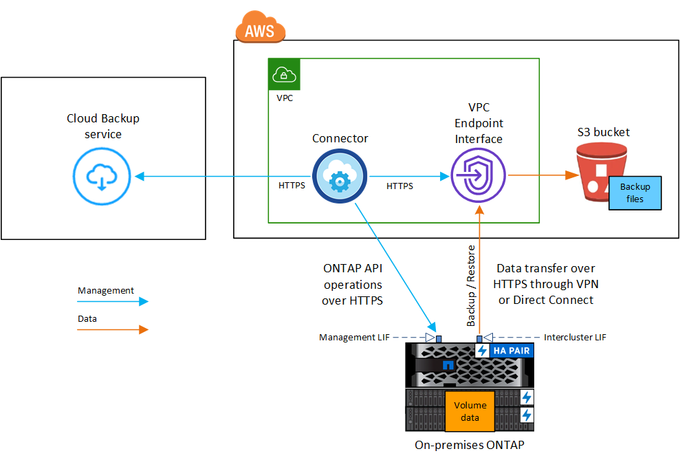
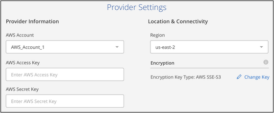

Request doc changes
Request doc changes Edit this page
Edit this page Learn how to contribute
Learn how to contributeBacking up on-premises ONTAP data to Amazon S3
Contributors
Complete a few steps to get started backing up data from your on-premises ONTAP systems to Amazon S3 storage.
Note that "on-premises ONTAP systems" includes FAS, AFF, and ONTAP Select systems.
Quick start
Get started quickly by following these steps. Details for each step are provided in the following sections in this topic.
 Identify the configuration method you’ll use
Identify the configuration method you’ll useChoose whether you’ll connect your on-premises ONTAP cluster directly to AWS S3 over the public internet, or whether you’ll use a VPN or AWS Direct Connect and route traffic through a private VPC Endpoint interface to AWS S3.
 Prepare your Cloud Manager Connector
Prepare your Cloud Manager ConnectorIf you already have a Connector deployed in your AWS VPC, then you’re all set. If not, then you’ll need to create a Connector in AWS in order to back up ONTAP data to AWS S3 storage. You’ll also need to customize network settings for the Connector so that it can connect to AWS S3.
 Prepare your on-premises ONTAP cluster
Prepare your on-premises ONTAP clusterDiscover your ONTAP cluster in Cloud Manager, verify that the cluster meets minimum requirements, and customize network settings so the cluster can connect to AWS S3.
 Prepare Amazon S3 as your backup target
Prepare Amazon S3 as your backup targetSet up permissions for the Connector to create and manage the S3 bucket, and to restore data using the Restore instance. And set up permissions for the on-premises ONTAP cluster so it can read and write data to the S3 bucket.
Optionally, you can set up your own custom-managed keys for data encryption instead of using the default Amazon S3 encryption keys. See how to get your AWS S3 environment ready to receive ONTAP backups.
 Enable Cloud Backup on the system
Enable Cloud Backup on the systemSelect the working environment and click Enable > Backup Volumes next to the Backup & Restore service in the right-panel. Then follow the setup wizard to define the default backup policy and number of backups to retain, and select the volumes you want to back up.
Network diagrams for connection options
There are two connection methods you can use when configuring backups from on-premises ONTAP systems to AWS S3.
-
Public connection - Directly connect the ONTAP system to AWS S3 using a public S3 endpoint.
-
Private connection - Use a VPN or AWS Direct Connect and route traffic through a VPC Endpoint interface that uses a private IP address.
The following diagram shows the public connection method and the connections that you need to prepare between the components:

The following diagram shows the private connection method and the connections that you need to prepare between the components:

Note that when the Cloud Restore instance is deployed in the cloud, it is located in the same subnet as the Connector.
Prepare your Connector
The Cloud Manager Connector is the main software for Cloud Manager functionality. A Connector is required to back up and restore your ONTAP data.
Creating or switching Connectors
If you already have a Connector deployed in your AWS VPC then you’re all set. If not, then you’ll need to create a new Connector in AWS in order to back up ONTAP data to AWS S3 storage. You can’t use a Connector that’s deployed on-premises, or that’s deployed in another cloud provider.
Connector networking requirements
-
Ensure that the network where the Connector is installed enables the following connections:
-
An HTTPS connection over port 443 to the Cloud Backup service and to your S3 object storage (see the list of endpoints here)
-
An HTTPS connection over port 443 to your ONTAP cluster management LIF
-
-
Ensure that the Connector has permissions to manage the S3 bucket.
-
If you have a Direct Connect or VPN connection from your ONTAP cluster to the VPC, and you want communication between the Connector and S3 to stay in your AWS internal network, you’ll need to enable a VPC Endpoint interface to S3. See how to set up a VPC endpoint interface.
Prepare your ONTAP cluster
Discover your ONTAP cluster in Cloud Manager
You need to discover your on-premises ONTAP cluster in Cloud Manager before you can start backing up volume data. You’ll need to know the cluster management IP address and the password for the admin user account to add the cluster.
ONTAP requirements
-
Minimum of ONTAP 9.7P5; ONTAP 9.8P11 and later is recommended.
-
A SnapMirror license (included as part of the Premium Bundle or Data Protection Bundle).
Note: The "Hybrid Cloud Bundle" is not required when using Cloud Backup.
See how to manage your cluster licenses.
-
Time and time zone are set correctly.
See how to configure your cluster time.
Cluster networking requirements
-
The cluster requires an inbound HTTPS connection from the Connector to the cluster management LIF.
-
An intercluster LIF is required on each ONTAP node that hosts the volumes you want to back up. These intercluster LIFs must be able to access the object store.
The cluster initiates an outbound HTTPS connection over port 443 from the intercluster LIFs to Amazon S3 storage for backup and restore operations. ONTAP reads and writes data to and from object storage — the object storage never initiates, it just responds.
-
The intercluster LIFs must be associated with the IPspace that ONTAP should use to connect to object storage. Learn more about IPspaces.
When you set up Cloud Backup, you are prompted for the IPspace to use. You should choose the IPspace that these LIFs are associated with. That might be the "Default" IPspace or a custom IPspace that you created.
If you use are using a different IPspace than "Default", then you might need to create a static route to get access to the object storage.
All intercluster LIFs within the IPspace must have access to the object store. If you can’t configure this for the current IPspace, then you’ll need to create a dedicated IPspace where all intercluster LIFs have access to the object store.
-
DNS servers must have been configured for the storage VM where the volumes are located. See how to configure DNS services for the SVM.
-
Update firewall rules, if necessary, to allow Cloud Backup connections from ONTAP to object storage through port 443 and name resolution traffic from the storage VM to the DNS server over port 53 (TCP/UDP).
-
If you are using a Private VPC Interface Endpoint in AWS for the S3 connection, then in order for HTTPS/443 to be used, you’ll need to load the S3 endpoint certificate into the ONTAP cluster. See how to set up a VPC endpoint interface and load the S3 certificate.
-
Ensure that your ONTAP cluster has permissions to access the S3 bucket.
Verify license requirements
-
Before you can activate Cloud Backup for your cluster, you’ll need to either subscribe to a pay-as-you-go (PAYGO) Cloud Manager Marketplace offering from AWS, or purchase and activate a Cloud Backup BYOL license from NetApp. These licenses are for your account and can be used across multiple systems.
-
For Cloud Backup PAYGO licensing, you’ll need a subscription to the AWS Cloud Manager Marketplace offering to use Cloud Backup. Billing for Cloud Backup is done through this subscription.
-
For Cloud Backup BYOL licensing, you’ll need the serial number from NetApp that enables you to use the service for the duration and capacity of the license. Learn how to manage your BYOL licenses.
-
-
You need to have an AWS subscription for the object storage space where your backups will be located.
You can create backups from on-premises systems to Amazon S3 in all regions where Cloud Volumes ONTAP is supported; including AWS GovCloud regions. You specify the region where backups will be stored when you set up the service.
Prepare your AWS environment
Set up S3 permissions
You’ll need to configure two sets of permissions:
-
Permissions for the Connector to create and manage the S3 bucket, and to restore data using the Restore instance.
-
Permissions for the on-premises ONTAP cluster so it can read and write data to the S3 bucket.
-
Confirm that the following S3 permissions (from the latest Cloud Manager policy) are part of the IAM role that provides the Connector with permissions.
{ "Sid": "backupPolicy", "Effect": "Allow", "Action": [ "s3:DeleteBucket", "s3:GetLifecycleConfiguration", "s3:PutLifecycleConfiguration", "s3:PutBucketTagging", "s3:ListBucketVersions", "s3:GetObject", "s3:DeleteObject", "s3:PutObject", "s3:ListBucket", "s3:ListAllMyBuckets", "s3:GetBucketTagging", "s3:GetBucketLocation", "s3:GetBucketPolicyStatus", "s3:GetBucketPublicAccessBlock", "s3:GetBucketAcl", "s3:GetBucketPolicy", "s3:PutBucketPublicAccessBlock", "s3:PutEncryptionConfiguration", "athena:StartQueryExecution", "athena:GetQueryResults", "athena:GetQueryExecution", "glue:GetDatabase", "glue:GetTable", "glue:CreateTable", "glue:CreateDatabase", "glue:GetPartitions", "glue:BatchCreatePartition", "glue:BatchDeletePartition" ], "Resource": [ "arn:aws:s3:::netapp-backup-*" ] },If you deployed the Connector using version 3.9.15 or greater, these permissions should be part of the IAM role already. Otherwise you’ll need to add the missing permissions. Specifically the "athena" and "glue" permissions, as they’re required for Search & Restore. See the AWS Documentation: Editing IAM policies.
-
Add the following EC2 permissions to the IAM role that provides the Connector with permissions so that it can start, stop, and terminate the Cloud Restore instance for Browse & Restore operations:
"Action": [ "ec2:DescribeInstanceTypeOfferings", "ec2:StartInstances", "ec2:StopInstances", "ec2:TerminateInstances" ], -
When activating the service, the Backup wizard will prompt you to enter an access key and secret key. These credentials are passed to the ONTAP cluster so that ONTAP can back up and restore data to the S3 bucket. For that, you’ll need to create an IAM user with the following permissions:
{ "Version": "2012-10-17", "Statement": [ { "Action": [ "s3:GetObject", "s3:PutObject", "s3:DeleteObject", "s3:ListBucket", "s3:ListAllMyBuckets", "s3:GetBucketLocation", "s3:PutEncryptionConfiguration" ], "Resource": "arn:aws:s3:::netapp-backup-*", "Effect": "Allow", "Sid": "backupPolicy" } ] }See the AWS Documentation: Creating a Role to Delegate Permissions to an IAM User for details.
Verify Cloud Restore internet access
If your virtual or physical network uses a proxy server for internet access, ensure that the Cloud Restore instance has outbound internet access to contact the following endpoints.
| Endpoints | Purpose |
|---|---|
http://amazonlinux.us-east-1.amazonaws.com/2/extras/docker/stable/ x86_64/4bf88ee77c395ffe1e0c3ca68530dfb3a683ec65a4a1ce9c0ff394be50e922b2/ |
CentOS package for the Cloud Restore Instance AMI. |
https://download.docker.com/linux/centos/docker-ce.repo |
Provides the Docker Engine packages. |
http://cloudmanagerinfraprod.azurecr.io |
Cloud Restore Instance image repository. |
Set up customer-managed AWS keys for data encryption
If you want to use the default Amazon S3 encryption keys to encrypt the data passed between your on-prem cluster and the S3 bucket, then you are all set because the default installation uses that type of encryption.
If you want to use your own customer-managed keys for data encryption instead of using the default keys, then you’ll need to have the encryption managed keys already set up before you start the Cloud Backup wizard. See how to use your own keys.
Configure your system for a private connection using a VPC endpoint interface
If you want to use a standard public internet connection, then all the permissions are set by the Connector and there is nothing else you need to do. This type of connection is shown in the first diagram.
If you want to have a more secure connection over the internet from your on-prem data center to the VPC, there’s an option to select an AWS PrivateLink connection in the Backup activation wizard. It’s required if you plan to use a VPN or AWS Direct Connect to connect your on-premises system through a VPC Endpoint interface that uses a private IP address. This type of connection is shown in the second diagram.
-
Create an Interface endpoint configuration using the Amazon VPC console or the command line. See details about using AWS PrivateLink for Amazon S3.
-
Modify the security group configuration that’s associated with the Cloud Manager Connector. You must change the policy to "Custom" (from "Full Access"), and you must add the S3 permissions from the backup policy as shown earlier.

If you’re using port 80 (HTTP) for communication to the private endpoint, you are all set. You can enable Cloud Backup on the cluster now.
If you’re using port 443 (HTTPS) for communication to the private endpoint, you must copy the certificate from the VPC S3 endpoint and add the certificate to your ONTAP cluster, as shown in the next 4 steps.
-
Obtain the DNS name of the endpoint from the AWS Console.

-
Obtain the certificate from the VPC S3 endpoint. You do this by logging into the VM that hosts the Cloud Manager Connector and running the following command. When entering the DNS name of the endpoint, add “bucket” to the beginning, replacing the “*”:
[ec2-user@ip-10-160-4-68 ~]$ openssl s_client -connect bucket.vpce-0ff5c15df7e00fbab-yxs7lt8v.s3.us-west-2.vpce.amazonaws.com:443 -showcerts -
From the output of this command, copy the data for the S3 certificate (all data between, and including, the BEGIN / END CERTIFICATE tags):
Certificate chain 0 s:/CN=s3.us-west-2.amazonaws.com` i:/C=US/O=Amazon/OU=Server CA 1B/CN=Amazon -----BEGIN CERTIFICATE----- MIIM6zCCC9OgAwIBAgIQA7MGJ4FaDBR8uL0KR3oltTANBgkqhkiG9w0BAQsFADBG … … GqvbOz/oO2NWLLFCqI+xmkLcMiPrZy+/6Af+HH2mLCM4EsI2b+IpBmPkriWnnxo= -----END CERTIFICATE----- -
Log into the ONTAP cluster CLI and apply the certificate you copied using the following command (substitute your own storage VM name):
cluster1::> security certificate install -vserver cluster1 -type server-ca Please enter Certificate: Press <Enter> when done
Enable Cloud Backup
Enable Cloud Backup at any time directly from the on-premises working environment.
-
From the Canvas, select the working environment and click Enable > Backup Volumes next to the Backup & Restore service in the right-panel.

-
Select Amazon Web Services as your provider and click Next.
-
Enter the provider details and click Next.
-
The AWS Account, the AWS Access Key, and the Secret Key used to store the backups.
The access key and secret key are for the IAM user you created to give the ONTAP cluster access to the S3 bucket.
-
The AWS region where the backups will be stored.
-
Whether you’ll use the default Amazon S3 encryption keys, or choose your own customer-managed keys from your AWS account, to manage encryption of your data. (See how to use your own keys).

-
-
If you don’t have an existing Cloud Backup license for your account, you’ll be prompted at this point to select the type of charging method that you want to use. You can subscribe to a pay-as-you-go (PAYGO) Cloud Manager Marketplace offering from AWS (or if you have multiple subscriptions you’ll need to select one), or purchase and activate a Cloud Backup BYOL license from NetApp. Learn how to set up Cloud Backup licensing.
-
Enter the networking details and click Next.
-
The IPspace in the ONTAP cluster where the volumes you want to back up reside. The intercluster LIFs for this IPspace must have outbound internet access.
-
Optionally, choose whether you’ll use an AWS PrivateLink that you have previously configured. See details about using AWS PrivateLink for Amazon S3.

-
-
Enter the default backup policy details and click Next.
-
Define the backup schedule and choose the number of backups to retain. See the list of existing policies you can choose.
-
When using ONTAP 9.10.1 and greater, you can choose to tier backups to either S3 Glacier or S3 Glacier Deep Archive storage after a certain number of days for further cost optimization. Learn more about using archival tiers.

-
-
Select the volumes that you want to back up using the default backup policy in the Select Volumes page. If you want to assign different backup policies to certain volumes, you can create additional policies and apply them to those volumes later.
-
To back up all volumes, check the box in the title row (
 ).
). -
To back up individual volumes, check the box for each volume (
 ).
).
If you want all volumes added in the future to have backup enabled, just leave the checkbox for "Automatically back up future volumes…" checked. If you disable this setting, you’ll need to manually enable backups for future volumes.
-
-
Click Activate Backup and Cloud Backup starts taking the initial backups of your volumes.
Cloud Backup starts taking the initial backups of each selected volume and the Volume Backup Dashboard is displayed so you can monitor the state of the backups.
You can start and stop backups for volumes or change the backup schedule.
You can also restore entire volumes or individual files from a backup file to a Cloud Volumes ONTAP system in AWS, or to an on-premises ONTAP system.